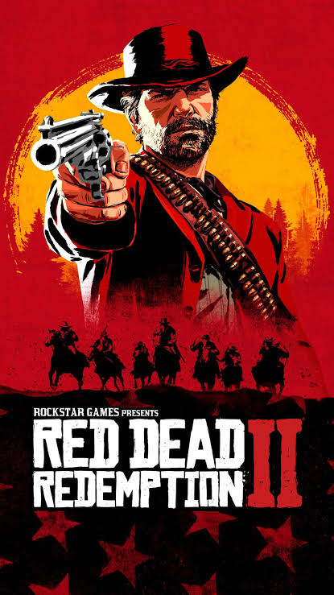

- Arthur Morgan
- Dutch van der Linde
- Sadie Adler
- Hosea Matthews
- Micah Bell
Main Characters
- Legendary Bear
- Legendary White Bison
- Legendary Wolf
- Legendary Panther
- Legendary Caiman
/britanic_flag.gif)

RDR is an open world action and adventure game set in the Old West. You control Arthur Morgan, a cowboy and member of a gang. You can explore a big world with towns, mountains, forests, rivers, farms, and many other places. You can also ride horses, use weapons, hunt animals, and talk to different people.
In the game, you complete missions with your gang and help other characters. You travel to different places and meet many people. Arthur and his gang are looking for money and a safe place to live. You can also explore the world and find new places, animals, and activities. The game has many missions and things to do.
RDR has a long and interesting story with many characters and events. Your actions and decisions can influence some parts of the story. The game also has different weather, day and night, and a very detailed world. RDR is a game about cowboys, adventure, friendship, and life in the Old West.
Red Dead Redemption 2 follows the story of Arthur Morgan, an outlaw traveling with Dutch van der Linde's gang as they flee from the law. During his adventure, Arthur faces difficult decisions about loyalty, friendship, and redemption in the Wild West.